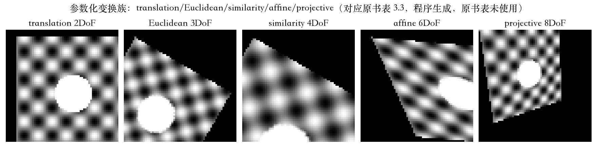
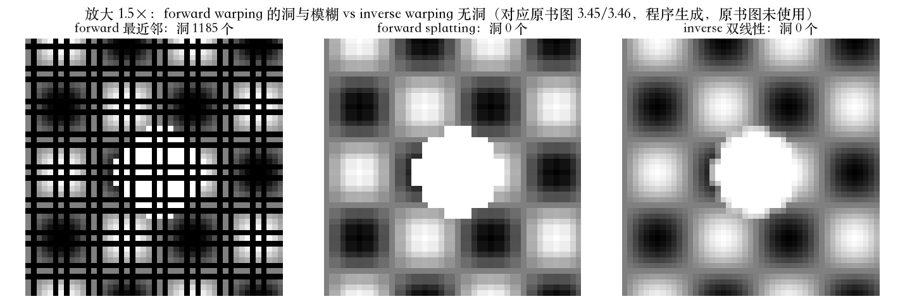
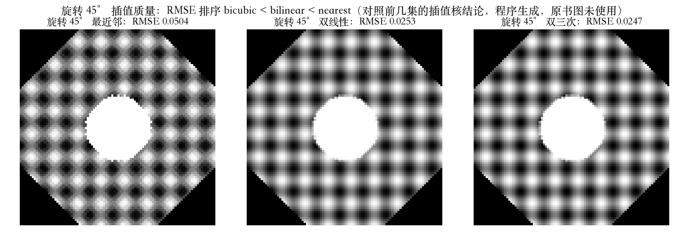
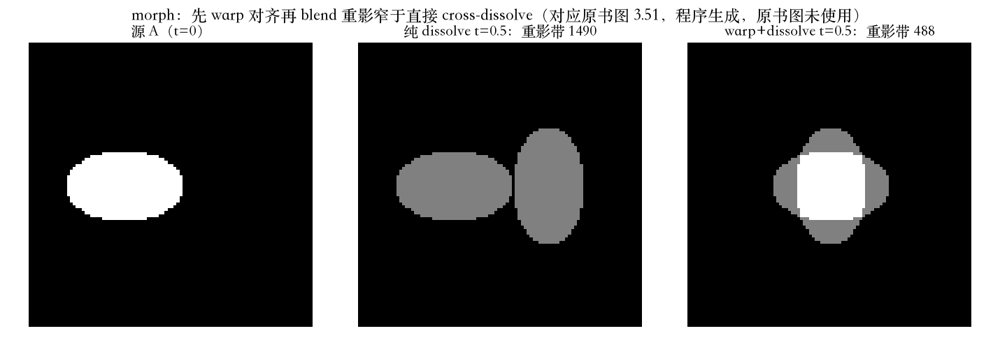

开场 · 定义域与值域
几何变换：改定义域，不改值域
- 点运算和滤波，改每个位置上的值。
- 几何变换改的是值从哪里取。
- 点过程 g = h(f(x))：改值域。
- 几何变换 g = f(h(x))：改定义域。
依据：原书第 168 页
两条式子
点过程：g = h(f(x))
几何变换：g = f(h(x))
图像扭曲只改定义域
变换族 · 自由度层级
参数化变换族：二三四六八
- 平移 2、刚体 3、相似 4、仿射 6、射影 8。
- 每一级还同时保住下面各级的性质。
- 刚体保长度，相似保角度。
- 仿射保平行，射影保直线、不保平行。
依据：原书第 168–169 页；本集实验

五级变换族：平移 / 刚体 / 相似 / 仿射 / 射影｜程序生成，未用教材或论文原图
扭曲方向 · 前向与逆向
前向与逆向：贴过去有洞，抽回来无缝
- 前向：源图每个像素搬到目标位置。
- 非整数位置没有定义，放大还会出洞。
- 逆向：目标每个像素回源图采样。
- 放大 1.5×：前向最近邻洞 1185/2209，逆向 0。
依据：原书第 169–171 页；本集实验

放大 1.5×：前向最近邻洞 1185 / splatting 洞 0 / 逆向双线性洞 0｜程序生成，未用教材或论文原图
重采样 · 抗混叠
变换下的重采样：先预滤，再采样
- 双线性快，双三次和加窗 sinc 保质量。
- 旋转 45°：最近邻 RMSE 0.0504，双三次 0.0247。
- 一般变换先估采样率，再定核形状。
- MIP-map：层号 log2 r，两层按小数部分混合。
依据：原书第 171–175 页；本集实验

旋转 45°：最近邻 RMSE 0.0504 / 双线性 0.0253 / 双三次 0.0247｜程序生成，未用教材或论文原图
局部变形 · 三种做法
网格变形：局部动，别处不动
- 稀疏对应点：三角化，每个三角形内用仿射。
- 逐像素位移场：先扭位移场，补洞，再逆向重采样。
- 有向线段：段上精确迁移，附近按相似变换平滑插值。
- 权重取到线段的距离：段内用垂距，段外取端点距离。
依据：原书第 175–177 页；本集实验
三种做法
稀疏点 → 三角形仿射
位移场 → 先扭再补洞
有向线段 → 相似变换
morphing · 本集收束
morphing：先对齐，再淡化
- 直接交叉淡化会重影。
- 两幅图先各自向对方扭曲，再混合。
- 中间帧权重 1−t 和 t，位移也线性插值。
- 重影带：直接淡化 1490 像素，先扭曲 488。
依据：原书第 177–178 页；本集实验

morph 三格：源 A（t=0）/ 纯 dissolve（重影带 1490）/ warp+dissolve（重影带 488）｜程序生成，未用教材或论文原图